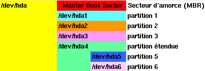

Solutions informatiques simples pour un monde complexe |
|
|
Pour pouvoire lire les données contenues sur un disque, une disquette ou un CD-ROM, il faut tout d'abord le "monter". En effet Linux, contrairement à Windows, n'attribue pas automatiquement une lettre à chaque disque et partition de disque.Correspondance des prériphériques :La commande "mount" est utilisée pour "monter" un disque
Sa syntaxe est :mount <périphérique> <répertoire de montage>Exemple pour une disquette :mount /dev/fd0 /floppyExpliquation :Toutes les périphériques que Linux peut utiliser ont un fichier spécial dans le répertoire "/dev"."mount" demande en paramètre le nom du fichier de périphérique que l'on veut "monter" et le nom du répertoire où l'on veut "monter" le disque.
Le répertoire de montage doit exister , si il n'existe pas il faut le créer avec la commande "mkdir". Ce répertoire peut se trouver n'importe où dans l'arboressance.
La commande "mount" n'est utilisable que par l'utilisateur "root" (administrateur).
Quand le disque est monté, les données qu'il contient sont accèssibles dans le répertoire de montage comme toutes les autres données contenues sur la partition "/".
Les partitions des disques dursContrairement aux disques durs, les disquettes et les CD-ROMs peuvent être montés directement par leur périphérique.
/dev/fd0 premier lecteur de disquette ("A:" sous DOS) /dev/fd1 deuxième lecteur de disquette ("B:" sous DOS) /dev/hda premier disque dur IDE (master du controlleur 1) /dev/hdb deuxième disque dur ou CD-ROM IDE (slave du controlleur 1) /dev/hdc troisième disque dur ou CD-ROM IDE (master du controlleur 2) /dev/hdd quatrième disque dur ou CD-ROM IDE (slave du controlleur 2) /dev/sda premier disque dur SCSI /dev/sdb deuxième disque dur SCSI /dev/scd0 premier CD-ROM SCSI /dev/scd1 deuxième CD-ROM SCSI Le PC peut contenir jusqu'à 4 disques durs IDE ("/dev/hda -> /dev/hdd") et 16 disques durs SCSI ("/dev/sda -> /dev/sdp").
Montage automatique au démarrage
Les disques durs IDE ou SCSI sont composés d'un secteur d'amorce et d'au moins une partition. Chaque disque peut avoir un maximum de 15 partitions (4 partitions primaires ou 3 partitions primaire, 1 partition étendue et 11 partitions secondaires).Il faut donner en paramètre à "mount" le périphérique représentant la partition du disque que l'on veut "monter". Tout comme le prériphérique représentant le disque dur complet, la partition étendue n'est pas "montable", mais les partitions qu'elle contient le sont.
Exemple de partitionnement d'un disque dur :
 En général, "/dev/hda1" est la partition dos qui contient Windows 95, "/dev/hda2" est la partition de de "Swap" Linux, "/dev/hda3" est la partition "racine" "/" (principale) de Linux.
En général, il n'y a pas de partition étendue.
La commande "fdisk -l" donne la liste des partitions des disques durs :
root@linux:~ > fdisk -l Disk /dev/hda: 128 heads, 63 sectors, 993 cylinders
Units = cylinders of 8064 * 512 bytesDevice Boot Start End Blocks Id System
/dev/hda1 * 1 204 822496+ b Win95 FAT32
/dev/hda2 205 229 100800 82 Linux swap
/dev/hda3 230 600 1495872 83 Linux native
/dev/hda4 601 993 1584576 5 Extended
/dev/hda5 601 800 806368+ 83 Linux native
/dev/hda6 801 993 778144+ 83 Linux native
root@linux:~ >
Il est possible de demander à Linux de "monter" automatiquement les partitions des disques durs à chaque démarrage en ajoutant un ligne dans le fichier "/etc/fstab".Démontage des CD-ROM et disquetteLes deux premières lignes sont automatiquement générées lors de l'installation, les 2 autres doivent être ajoutées manuellement.
root@linux:~ > cat /etc/fstab
/dev/hda3 / ext2 defaults 1 1
/dev/hda2 swap swap defaults 0 0
/dev/hda1 /dos msdos defaults 0 0
/dev/hdc /cdrom iso9660 ro,noauto,user 0 0
root@linux:~ >
L'option "user" de la ligne correspondant au CD-ROM indique que tous les utilisateurs peuvent aussi utiliser "mount" pour le "monter" et "démonter".
Lors que l'on veut retirer une disquette ou un CD-ROM de son lecteur, il faut tout d'abord le "démonter" à l'aide de la commande "umount". "mount" sans paramètre affiche la liste de tous les prériphériques actuellement "montés".Accès à une disquette sans la monter
root@linux:~ > mount
/dev/hda3 on / type ext2 (rw)
proc on /proc type proc (rw)
/dev/hda1 on /dos type msdos (rw)
/dev/hdc on /cdrom type iso9660 (ro,noexec,nosuid,nodev)
root@linux:~ > umount /cdrom
root@linux:~ >
Il y a une possiblité de lire et d'écrire sur une disquette DOS sans la monter en utilisant les "mtools" (si le package correspondant est installé).Exemple complet avec un CD-ROM IDE:
La commande "mdir a:" est l'équivalent de "DIR A:" avec DOS et "mcopy a:* /tmp" est l'équivalent de "COPY A:*.* \TMP".
root@linux:~ > grep -i CDROM /var/log/boot.msg
<4>hdc: CD-224E, ATAPI CDROM drive
root@linux:~ > mkdir /cdrom
root@linux:~ > mount /dev/hdc /cdrom
mount: block device /dev/hdc is write-protected, mounting read-only
root@linux:~ > ls /cdrom
INDEX.gz TRANS.TBL full-names ls-lR.gz suse
root@linux:~ > umount /cdrom
root@linux:~ > ls /cdrom
root@linux:~ > echo /dev/hdc /cdrom iso9660 user 0 0 >>/etc/fstab
root@linux:~ >